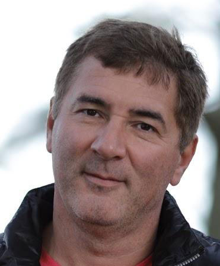
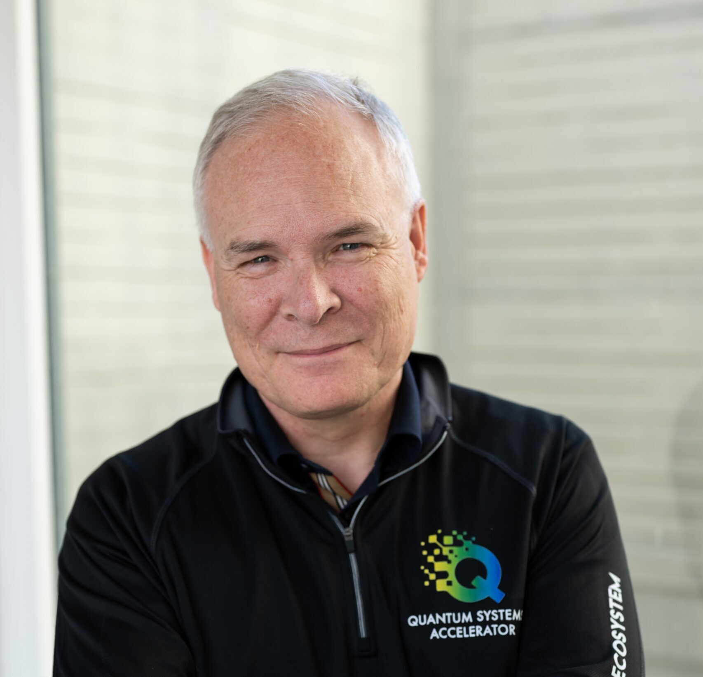
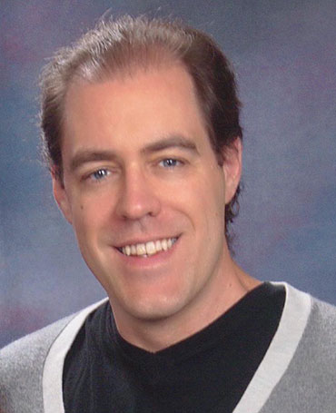
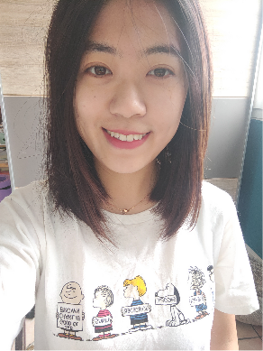
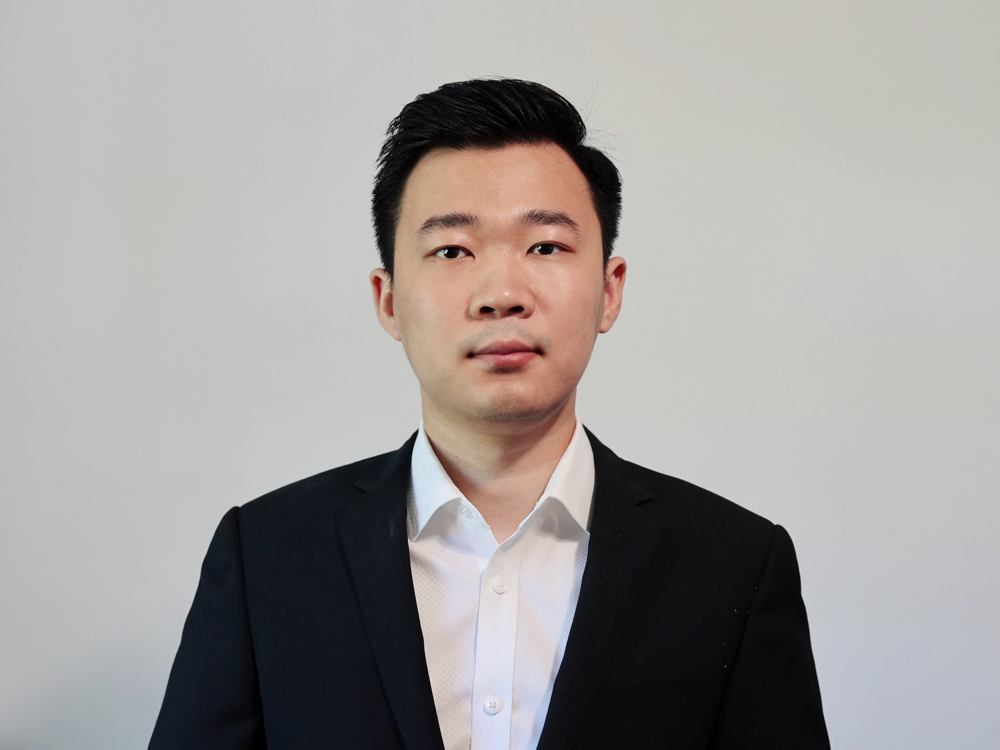
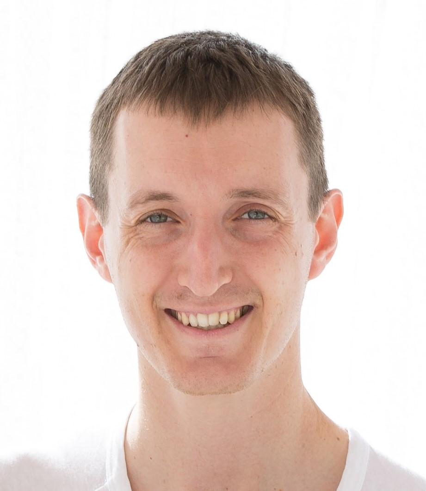
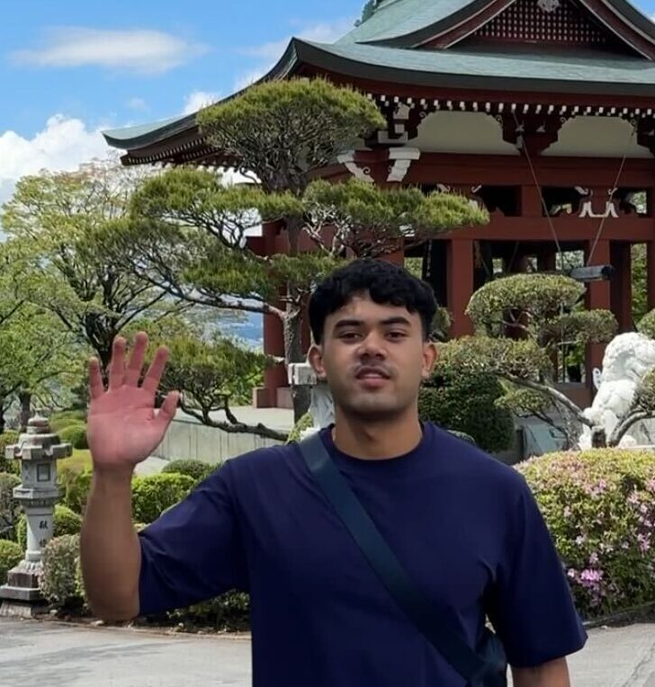
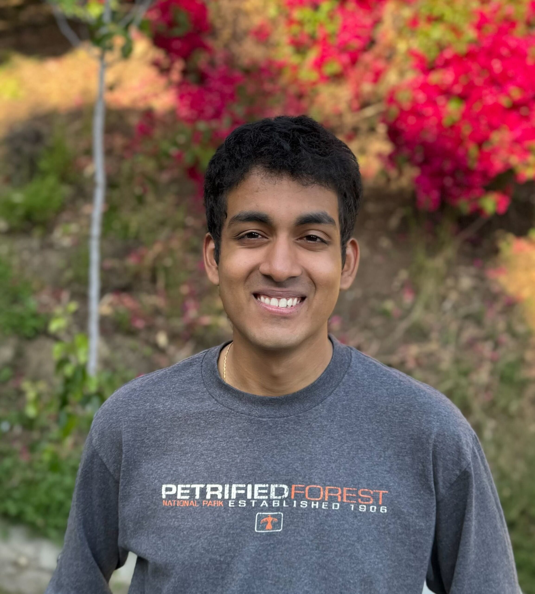

BQSKit is developed at Lawrence Berkeley National Laboratory, with collaborators at UC Berkeley, Argonne National Laboratory, and the Naval Postgraduate School. Funded by the DOE Office of Science Advanced Scientific Computing Research program.
BQSKit stands on its own as an end-to-end compilation solution by combining state-of-the-art partitioning, synthesis, and instantiation algorithms. The framework is built in an easy-to-access and quick-to-extend fashion, allowing users to best tailor a workflow to suit their specific domain.
It is the only fully portable compiler that exists — without any user effort, it can transpile circuits from any gate set to any gate set. Sets with multiple entangling gates or larger-than-two-qudit gates are no problem for BQSKit. Numerical instantiation is what enables this complete portability while maintaining high-quality compilation.
All of our software is free and open-source. We are constantly improving BQSKit; star and watch our GitHub to be the first to know about updates.








This work was supported by the DOE Office of Advanced Scientific Computing Research (ASCR) through the Accelerated Research for Quantum Computing Program.